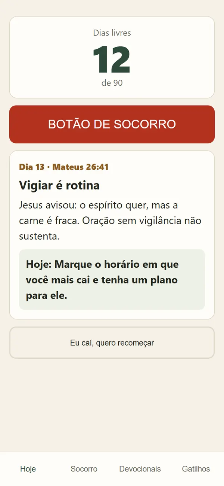
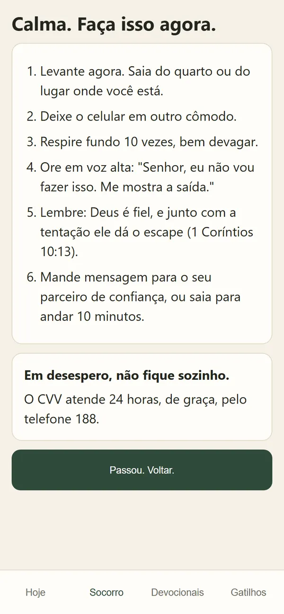
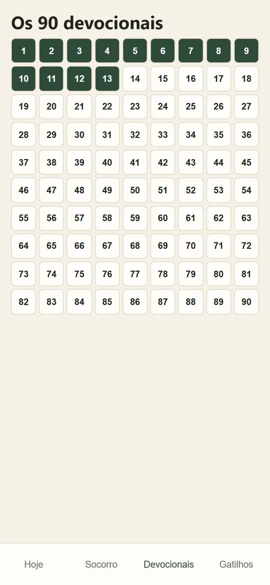
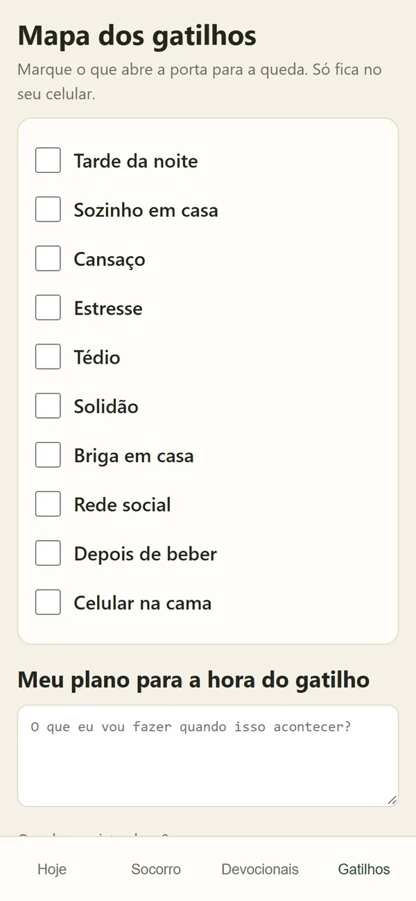

Bônus 1Botão de Socorro
Seis passos para os primeiros minutos da tentação, com o versículo de 1 Coríntios 10:13 e o lembrete do CVV para os dias mais pesados.
Um caminho de 90 dias no celular para vencer o vício em pornografia, com fé e estratégia: um devocional por dia, um botão de socorro para a hora da tentação e o mapa dos seus gatilhos.
Pagamento único, por Pix ou cartão. O acesso chega na hora, no seu e-mail. Só para maiores de 18 anos.

Cada quadrado é um dia livre. O primeiro pode ser hoje.
Você não está sozinho. Tem homem escrevendo "sempre caio no mesmo pecado" embaixo de toda pregação. Tem homem que conta "um de trezentos e sessenta e cinco, primeiro dia" e não chega no décimo.
O problema nunca foi falta de vontade de mudar. É que ninguém mostrou para você como essa queda funciona.
Porque o vício tem rotina. Ele anda em quatro passos que se repetem: gatilho, ritual, queda e culpa.
O gatilho é o tédio, a solidão, o cansaço ou a hora em que todo mundo foi dormir. O ritual é o celular na cama e a primeira busca "só para ver". Depois vem a queda. E depois a culpa, com a promessa de que foi a última vez.
O detalhe que quase ninguém percebe: a culpa vira o gatilho da próxima queda. Você se sente um lixo, fica mais sozinho e mais cansado, e o ciclo recomeça.
Bloqueador e promessa atacam a queda. Nenhum dos dois mexe no ciclo.
| O que conta | Bloqueador | Promessa | 90 Dias |
|---|---|---|---|
| Mostra qual é o seu gatilho | ✕ | ✕ | ✓ |
| Ajuda na hora da tentação | ✕ | ✕ | ✓ |
| Palavra de Deus todos os dias | ✕ | ✕ | ✓ |
| Mostra o seu progresso, dia a dia | ✕ | ✕ | ✓ |
O 90 Dias de Liberdade une o que a Bíblia ensina sobre domínio próprio com o que os programas de prevenção de recaída ensinam: conhecer o seu gatilho, agir antes da queda e não lutar sozinho.
É um caminho de 90 dias no celular. Todo dia tem um devocional curto, com uma ação prática para aquele dia. E, quando a tentação aparece, você tem o que fazer nos primeiros minutos, que são os que decidem.
Quem se recupera aprende isso primeiro. Apareceu um deles, liga o alerta.
É para isso que os 90 dias existem:
Em vez de contar só com a força de vontade, você tem seis passos na tela para os primeiros minutos da tentação: levantar, largar o celular, orar em voz alta e chamar alguém.
Volta a orar sem vergonha, olha para a sua esposa de cabeça erguida e deixa de levar uma vida dupla dentro da igreja.
Cada dia livre aparece na tela. Se cair, você recomeça no mesmo dia, sem drama, e a queda vira informação sobre o seu gatilho.
"Não veio sobre vós tentação, senão humana; mas fiel é Deus, que não vos deixará tentar acima do que podeis, antes com a tentação dará também o escape."1 Coríntios 10:13
Abre no navegador, sem instalar aplicativo. Tudo o que você marca fica guardado só no seu aparelho.



Dias 1 a 30
Abrir o jogo com Deus, sair do segredo e mapear os gatilhos.
Dias 31 a 60
Renovar a mente, cuidar do corpo e treinar o domínio próprio.
Dias 61 a 90
Casamento, propósito e perseverança, para continuar depois do dia 90.
Seis passos para os primeiros minutos da tentação, com o versículo de 1 Coríntios 10:13 e o lembrete do CVV para os dias mais pesados.
Dez situações que abrem a porta para a queda, como tarde da noite, depois de beber e celular na cama. Você marca as suas e escreve o que vai fazer quando elas aparecerem.
O número que cresce a cada dia. Se você cair, ele zera e você recomeça no mesmo dia, sem esconder de si mesmo.
É exatamente este texto que aparece no seu celular no primeiro dia.
DIA 1, SALMOS 32:3-5
Davi escondeu o pecado e definhou por dentro. Quando abriu o jogo com Deus, o peso saiu. O segredo é o oxigênio do vício.
Hoje: conte a Deus, em voz alta, exatamente como foi a última queda.
São 90 devocionais como o do dia 1, um para cada dia do caminho.
A diferença começa no que você faz quando a tentação chega.
Se você quer continuar fingindo que está tudo bem, não compre. Aqui tem que abrir o jogo.
Mas se você cansou de pedir perdão pelo mesmo pecado, é aqui que começa.
Sem mensalidade e sem cobrança escondida. Você paga uma vez e o caminho fica com você.
Caminho de 90 dias + 90 devocionais + Botão de Socorro + Mapa dos Gatilhos + Contador de dias livres
R$ 37Pagamento único. Menos de cinquenta centavos por dia de caminho.
Quero começar por R$ 37Pix com aprovação na hora ou cartão de crédito. O acesso chega no seu e-mail logo depois.
Compra em ambiente seguro, processada pela Wiapy.
Esta condição vale até a data definida.
Faça o caminho por até 30 dias. Se achar que não valeu a pena, peça o reembolso e devolvemos 100% do valor pago. Sem pergunta e sem burocracia.
Não. O contador, o mapa dos gatilhos e as anotações ficam salvos só no seu celular. Nada disso vai para outra pessoa.
Sim. Os devocionais usam a Bíblia e falam de fé, oração, confissão e domínio próprio.
Você aperta "Eu caí, quero recomeçar", o contador zera e você recomeça no mesmo dia. A queda vira informação sobre o seu gatilho, e não motivo para desistir.
Poucos minutos para ler o devocional e fazer a ação do dia. O botão de socorro fica à mão para quando precisar.
Não. É um apoio diário. Se a luta for pesada, procure ajuda profissional e alguém de confiança. O próprio caminho incentiva você a não lutar sozinho.
O caminho incentiva ter um parceiro de confiança, porque o segredo alimenta o vício. Mas é você quem decide quando e para quem.
Logo depois do pagamento chega um e-mail com o link. Ele abre no navegador do celular, sem instalar nada. No Pix, a aprovação é na hora.
Não. Você paga R$ 37 uma vez só.
Você tem 30 dias a partir da compra. Se não gostar, manda um e-mail para rmsolucoesdigitais2027@gmail.com e recebe todo o valor de volta.
Um dia de cada vez. A Palavra todo dia, um plano para a hora da tentação e 30 dias de garantia para decidir.
Pix ou cartão. Acesso na hora, no seu e-mail.
Em um momento de desespero, não fique sozinho. O CVV atende 24 horas, de graça, pelo telefone 188.